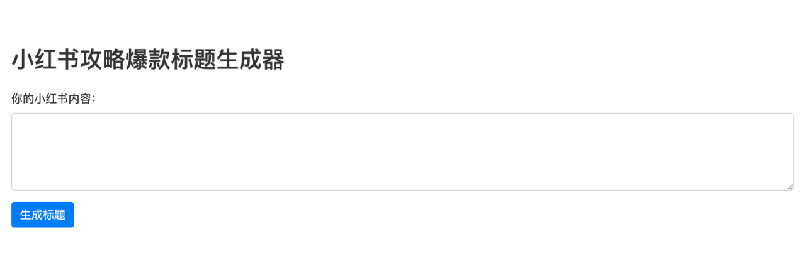
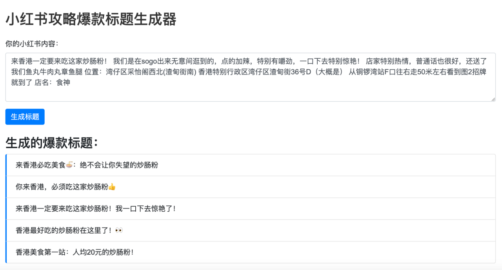
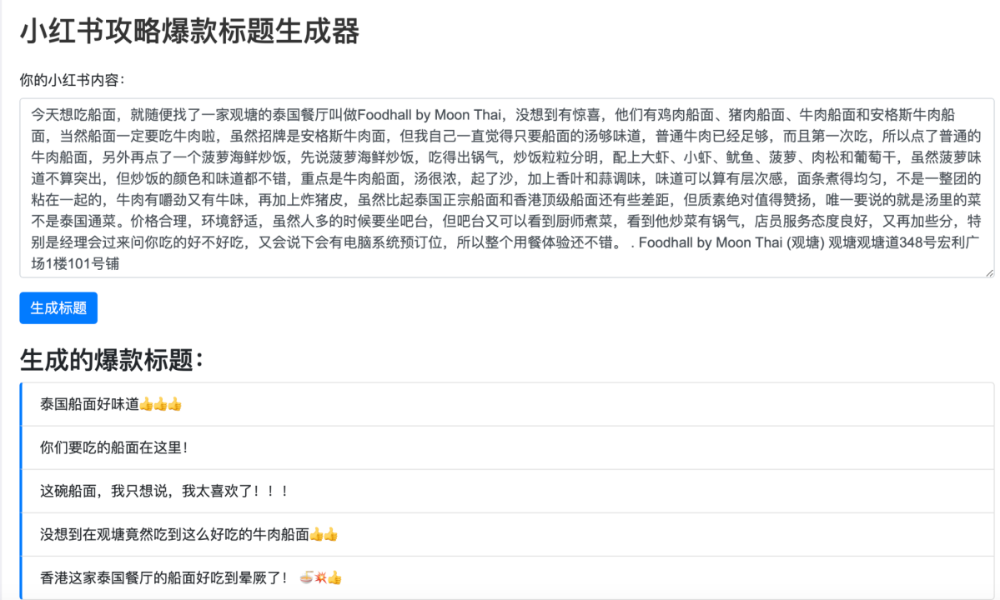
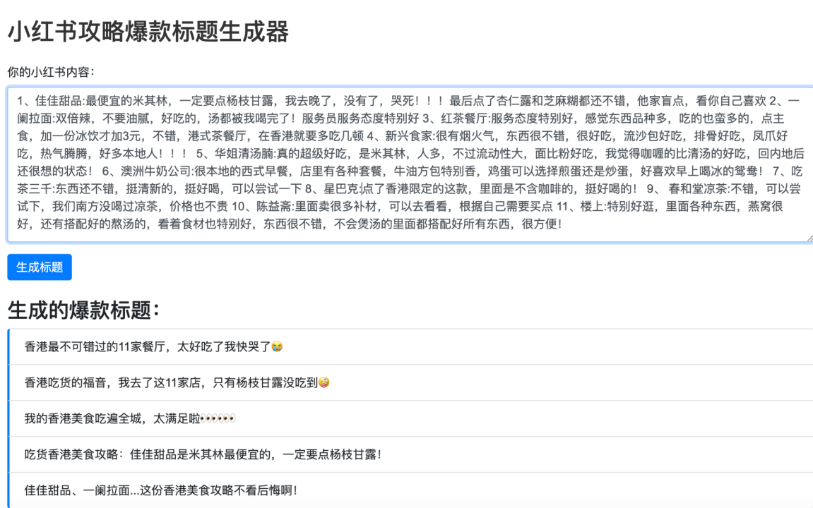

来香港一定要吃的！！！！
emotional hook
Strong hook, but information is not specific enough.
A content analytics workflow using RED post examples, engagement signals and headline pattern review.
This project explores how Xiaohongshu / RED public post examples and engagement signals can support headline optimisation.
Rather than treating AI generation as the final answer, the project uses headline pattern review and prompt rules to create testable title options for human review.
On Xiaohongshu, the headline works as a traffic hook. It needs to signal the topic clearly, match user search intent, create curiosity or usefulness, fit platform language and encourage users to click or save.
How can public post examples and engagement signals be translated into a repeatable headline optimisation workflow?
Strong hook, but information is not specific enough.
Clear product/category cue; can be stronger with location.
Travel scenario is clear, but wording may sound exaggerated.
Clear location and value cue; useful for search and testing.
Collect RED post examples
Read engagement signals
Code headline patterns
Turn patterns into prompt rules
Draft headline options
Review for platform fit
Public post examples were collected and cleaned before headline review. Duplicate records, emojis, garbled text and irrelevant fields were removed to make the dataset easier to compare.




AI-assisted headlines are treated as testable options, not final answers.
This project demonstrates a content optimisation workflow, not an automatic publishing tool. The main value is using platform examples and engagement signals to support faster ideation, human review and future A/B testing.